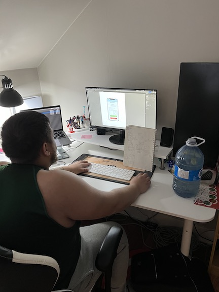

Adrian Shahrivar
Welcome to my Resume
.png)
I am a third year undergraduate student studying User Experience Design at Wilfrid Laurier University. I’m 22 years old from Toronto, Canada. My passion is in designing for efficiency and usability, and I am a big advocate of designing for change and for the future. I am also a varsity athlete playing for Wilfrid Laurier's Mens Indoor Soccer team.
Education
I attended Agincourt Collegiate Institute in Scarborough, Ontario before studying User Experience Design at Wilfrid Laurier University. I graduated highschool in 2018, and am expected to graduate university in 2023. I will be taking an extra year of study due to co-op.
Experience
Work Experience
I've worked for design companies that allowed me to gain experience in designing digital experiences and designing interior decorating. Highlights of my work experience would include conducting research for a team at the Hospital for Sick Children and designing the interior layout of the Moose Knuckle store in Yorkdale Mall.

Softwares and Tools
As a part of my UX Classes, I learned how to use Adobe Illustrator, Photoshop, InDesign, and many more applications within the Adobe Suites. I am also able to use Figma at a high degree. I also know how to use the Apple iWork suites, Google suites, AutoCad, and SketchUp.

Contact
Let's Work Together! I can be reached at shahrivaradrian@gmail.com